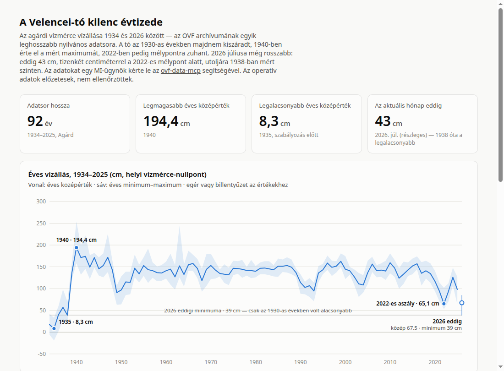
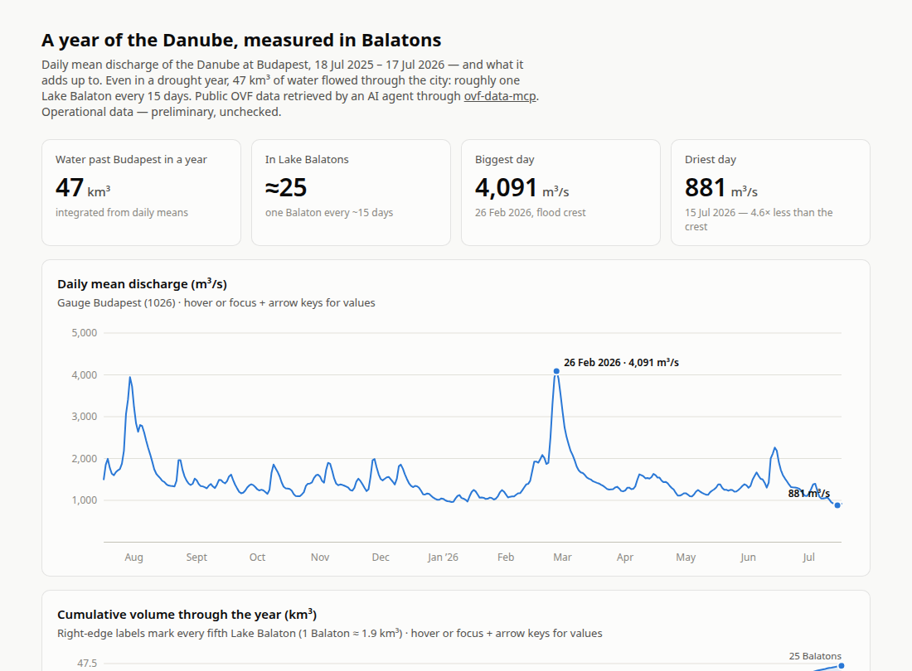
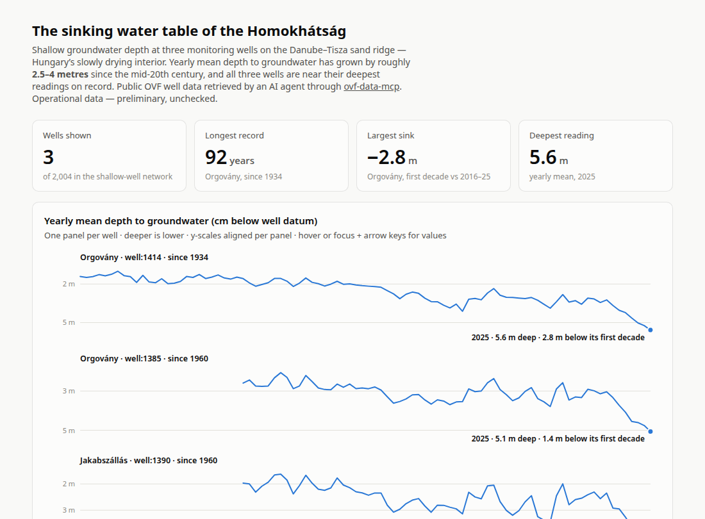
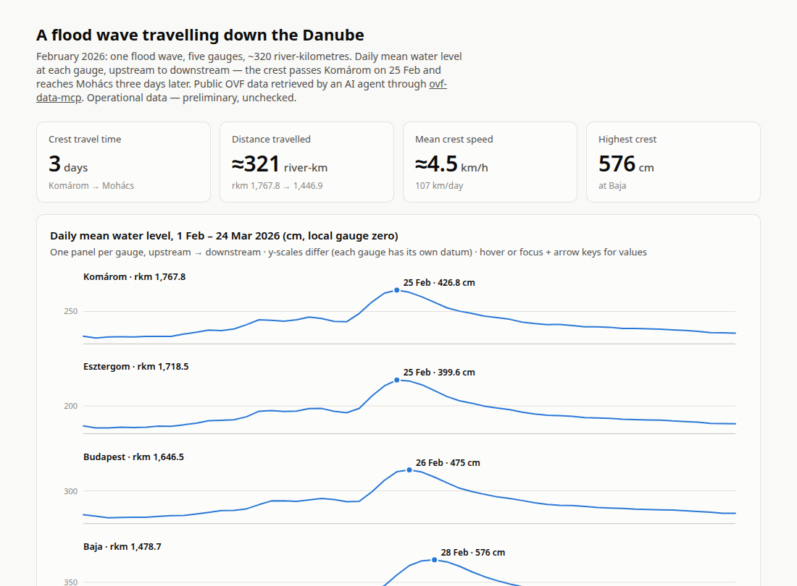
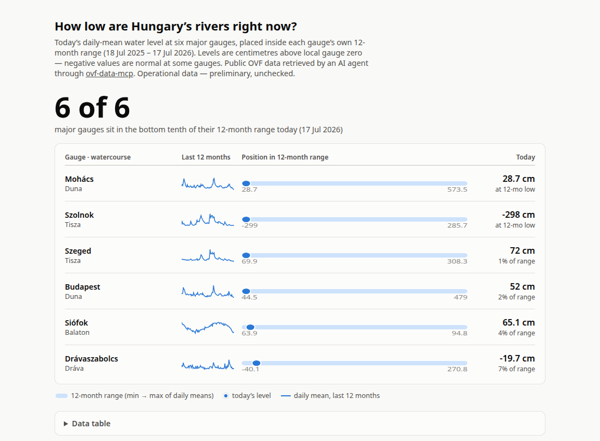
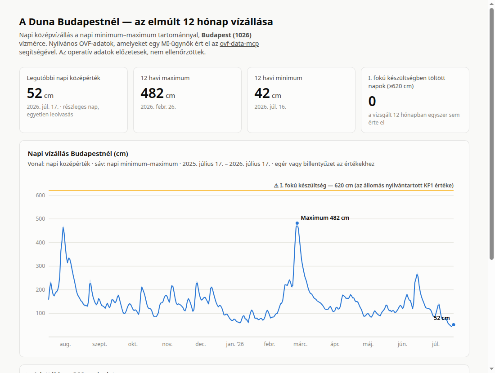

Self-contained pages built by an AI agent from public Hungarian water-management
data (Országos Vízügyi Főigazgatóság), retrieved through the
ovf-data-mcp CLI and MCP server.
Every number is traceable to the vizugy commands listed in each page's footer —
no scraping, no chart libraries, no build step.

92 years of the Agárd gauge — from the near-dry 1930s to July 2026, now below the 2022 crisis floor at a level last seen in 1938.

47 km³ passed Budapest this year — one Lake Balaton every ~15 days, integrated from daily discharge.

Three shallow wells on the Danube–Tisza ridge, up to 92 years each — the water table has sunk 1–3 metres.

Five gauges from Komárom to Mohács track the February 2026 crest across ~320 river-km in three days.

Six gauges across the Duna, Tisza, Dráva and Balaton, each placed in its own 12-month range — all in the bottom tenth.

Daily mean with min–max range and the flood-alert threshold at the Budapest gauge.